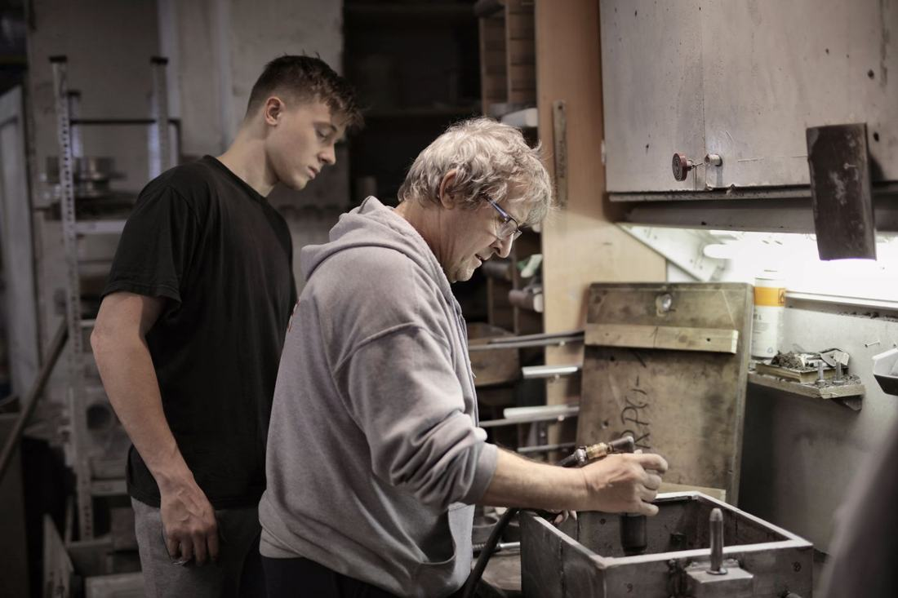

Donacija tvrtke
od 500 €
- Ugovor o donaciji i potvrda o primitku
- Izvješće o namjeni sredstava
- Zahvalnica za vaše prostorije
Tvrtke prijatelji SOS Dječjeg sela
Donacija tvrtke djeci u Lekeniku i Ladimirevcima osigurava školu, terapije i prvi stan nakon punoljetnosti. Država vam pritom priznaje donaciju kao rashod do 2 % prošlogodišnjeg prihoda.

Porezne olakšice u Hrvatskoj
Zakon o porezu na dobit dopušta da darovanja u novcu ili naravi za humanitarne i druge općekorisne svrhe umanje poreznu osnovicu. Za tvrtku to znači da dio donacije zapravo plaća manji porez na dobit.
Darovanja u novcu ili naravi za općekorisne svrhe priznaju se kao rashod do visine 2 % prihoda ostvarenog u prethodnoj godini.Zakon o porezu na dobit, čl. 7. (sažetak)
Uvjeti: donacija se daje primatelju koji djeluje u općekorisne svrhe, na temelju ugovora ili odluke o darovanju, a primatelj izdaje potvrdu o primitku i namjeni. Sve dokumente pripremamo mi.
Informativni sažetak, a ne porezni savjet. Konačan obračun provjerite s računovođom ili poreznim savjetnikom.
To je školski pribor i knjige za 125 djece kroz cijelu školsku godinu.
Modeli suradnje
Svaki model dolazi s ugovorom, potvrdom za knjigovodstvo i izvješćem o tome što je vaša donacija promijenila.
od 500 €
od 5.000 € godišnje
od 25.000 € godišnje

Više od novca
Namještaj, računala, hrana, sportska oprema. I donacije u naravi priznaju se do 2 % prihoda.
Vaš tim uređuje vrt, boja ograde ili vodi radionicu za djecu. Dogovaramo termin i plan.
Mladima iz programa podrške najviše znači prvo radno iskustvo i mentor u struci.
Zaposlenici doniraju mjesečno, a tvrtka udvostručuje iznos. Sve postavljamo umjesto vas.
Kako to izgleda
Javite nam se obrascem ili telefonom. Odgovaramo u roku od dva radna dana.
Zajedno biramo model, iznos i namjenu: opća podrška ili konkretan projekt.
Pripremamo ugovor o donaciji i potvrdu za vaše knjigovodstvo.
Dobivate izvješće s brojkama i fotografijama: što je kupljeno i kome je pomoglo.
Razgovarajmo
Osoba za suradnju s tvrtkama odgovara u roku od dva radna dana i predlaže model koji odgovara vašoj veličini i ciljevima.
[ime i prezime koordinatora]
[e-adresa za tvrtke] · [telefon]
Pitanja tvrtki
Ugovor ili odluku o donaciji, potvrdu o primitku sredstava s navedenom namjenom te izvješće o utrošku. To je dokumentacija koju računovodstvo treba za priznavanje rashoda.
Da. Granica se odnosi na zbroj svih darovanja u novcu i naravi za općekorisne svrhe u godini, računato na prihod prethodne godine.
Možete. Donacija može ići za opće potrebe sela ili za konkretnu namjenu, npr. opremanje kuće, stipendije ili program za mlade. Namjenu upisujemo u ugovor.
Da, i pomažemo vam s tekstom i fotografijama. Jedino pravilo: djecu ne prikazujemo tako da ih se može prepoznati, radi njihove zaštite.